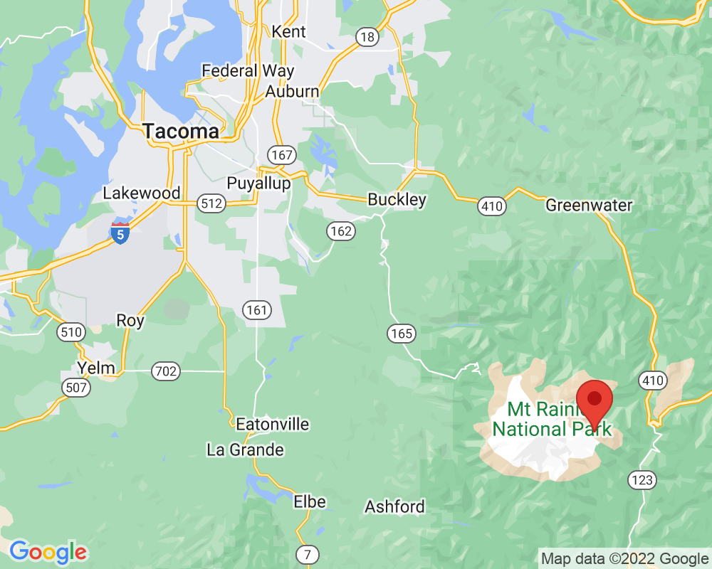

Sarvant Glaciers
The Sarvant Glaciers are a chain of very small glaciers. Even in September, just before the winter snow begins, there is still some snow and ice.
You can see the blue lake from where the ice has melted. If you look very closely, you might be able to see S-shaped ski tracks from skiers who carried their skis up the glacier and skied down.
Visited: September 23, 2022 at 11:50 AM
Location: White River Entrance/Panhandle Gap
